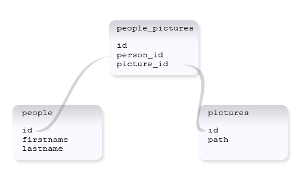
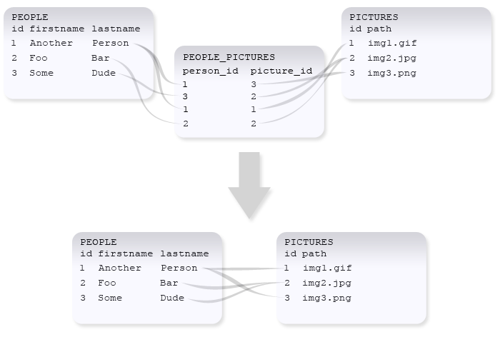

The Has And Belongs To Many Relationship
This is the relation you choose when you need to have many to many relations. For example a developer can have (or belong to) many clients, but a client can have (or belong to) many developers.
Example table diagram:
class person extends IgnitedRecord{
class picture extends IgnitedRecord{
|
 |
Example of data inserted and with relations in both ways:
Here the Another Person relates to both img1 and img3, while img2 relates to both Foo Bar and Some Dude.
Example returns when calling get_related():
$rec = $this->person->find(2); // find Another Person
echo "Pictures containing {$rec->firstname}";
$pictures = $rec->get_related('pictures');
foreach($pictures as $pic){
echo '<img src="'.$pic->path.'" />'; // insert image
// echo those other people on the picture
foreach($pic->get_related('people') as $person){
echo " $person->firstname ";
}
echo "\n";
}
// echoes:
Pictures containing Foo
<img src="img2.jpg" /> Foo Some
Settings, their default values and their keynames:
| Key | Short | Default | Description |
|---|---|---|---|
| table | - | name | The related table |
| name | - | tablename | The relation name, used when adding, removing and loading related records |
| model | - | tablename or singular(tablename), depending on if a model with that name exists |
The model to be used when instantiating related records (if no model is found, it creates records which doesn't link to the database) |
| join_table | - | relatedtablename_tablename , ordered alphabetically. | The table used to link the two tables together. |
| foreign_key | fk | modelname + _id | The foreign key column used relating to this table |
| related_foreign_key | related_fk, or r_fk | modelname of the related table + _id | The foreign key column used relating to the related table |
The name or table setting must be specified when
specifying the settings as properties.
When specifying relations using habtm() or has_and_belongs_to_many(),
the name must always be set.